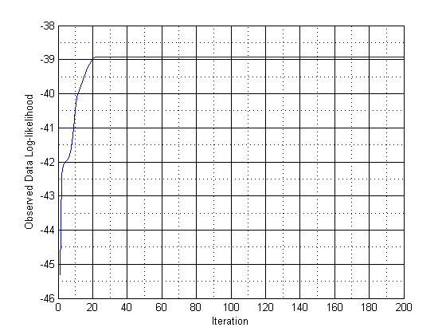

Contents
Author : Shujaat Khan
clc
clear all
close all
Data Entry
data=[-0.39 0.12 0.94 1.67 1.76 2.44 3.72 4.28 4.92 5.53,...
0.06 0.48 1.01 1.68 1.80 3.25 4.12 4.60 5.28 6.22];
Step 1 : Initial guess
temp=randperm(length(data));
piecap(1)=0.5;
meucap1(1)=data(temp(1));
meucap2(1)=data(temp(2));
sigmacap1(1)=var(data);
sigmacap2(1)=var(data);
for i = 1:200
Step 2 : Expectation Step; computes the responsibilities
Qq1=gauss_dist(data,meucap1(i),sigmacap1(i));
Qq2=gauss_dist(data,meucap2(i),sigmacap2(i));
log_likelihood(i)=sum(log(((1-piecap(i))*Qq1) + (piecap(i)*Qq2)));
responsibilities(i,:)=(piecap(i)*Qq2)./(((1-piecap(i))*Qq1)+(piecap(i)*Qq2));
Step 3 : Maximization Step; compute the weighted means and variances
meucap1(i+1)=sum((1-responsibilities(i,:)).*data)/sum(1-responsibilities(i,:));
meucap2(i+1)=sum((responsibilities(i,:)).*data)/sum(responsibilities(i,:));
sigmacap1(i+1)=sum((1-responsibilities(i,:)).*((data-meucap1(i)).^2))/sum(1-responsibilities(i,:));
sigmacap2(i+1)=sum((responsibilities(i,:)).*((data-meucap2(i)).^2))/sum(responsibilities(i,:));
piecap(i+1)=sum(responsibilities(i,:))/length(data);
end
figure
plot(log_likelihood)
xlabel('Iteration');
ylabel('Observed Data Log-likelihood');
grid minor
